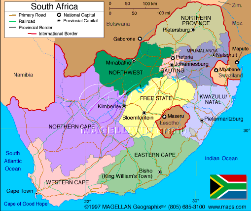

David Bar-Tzur
David Bar-Tzur

Flag: World flag database.
Map: Maps.com - "search" for country, then "Digital Map Graphics".
For a quick, interesting resource for facts about this and other countries,
try Mystic Planet - The New Age directory of Planet Earth.
 1. K. Reddy, personal communication, 1998.
1. K. Reddy, personal communication, 1998.